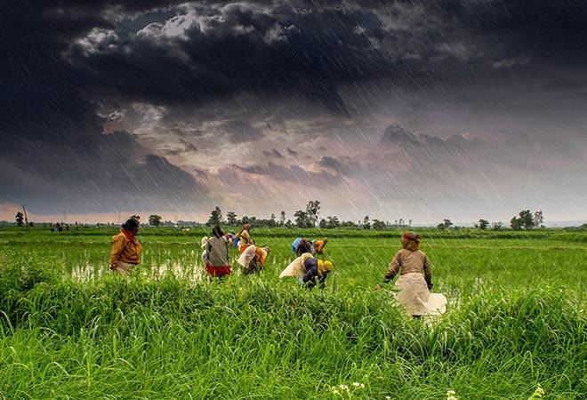

Rainfall Patterns
Understanding rainfall patterns is crucial for successful crop rotation. Different crops have varying water requirements and tolerance to wet or dry conditions. It's important to consider the average rainfall patterns in your region throughout the year. Here's a graph illustrating the average monthly rainfall:
Crop Adaptation to Rainfall
Crop rotation involves selecting crops that can adapt to different rainfall conditions. Some crops are more drought-tolerant, while others thrive in high rainfall areas. Here's an image showcasing a selection of crops suitable for different rainfall ranges:
Farmers must adapt their practices to cope with rainfall variability:
Irrigation Systems: In areas with unreliable rainfall, implementing irrigation systems can help ensure a consistent water supply for crops.
Water Conservation: Adopting water conservation techniques, such as mulching and drip irrigation, can help reduce water loss and improve soil moisture retention.
Improved Drainage: Implementing proper drainage systems can prevent waterlogging and facilitate excess water runoff during heavy rainfall.
Crop Selection: Choosing crop varieties that are tolerant to drought or excessive rainfall can help mitigate the effects of rainfall variability.
Benefits of Rainfall-Based Crop Rotation
Optimizes water usage by aligning crops with rainfall availability
Minimizes irrigation needs and associated costs
Reduces the risk of water stress or waterlogging for crops
Improves overall crop health and productivity

Rainfall in Various Crops
| Crop |
Optimal Rainfall Range (mm) |
Preferred Soil Moisture Level |
| Wheat |
300-500 |
Moist |
| Corn |
600-800 |
Well-drained |
| Rice |
1500-3000 |
Waterlogged |
| Soybeans |
500-800 |
Adequately Moist |
| Potatoes |
400-600 |
Moist |
Effects of Rainfall on Agriculture
Rainfall is a critical factor in agricultural production. The amount, timing, and distribution of rainfall greatly influence crop growth, soil moisture levels, and overall agricultural productivity. Understanding the effects of rainfall is essential for effective farming and water management strategies.
Effects of Rainfall on Crop Growth
Rainfall affects crops in several ways:
Water Supply: Rainfall provides the primary source of water for crops. Adequate rainfall ensures sufficient soil moisture for plant growth and development.
Drought Stress: Insufficient rainfall or prolonged dry spells can lead to drought stress, which negatively impacts crop yields and quality.
Waterlogging: Excessive rainfall or poor drainage can result in waterlogging, saturating the soil and depriving plant roots of oxygen, leading to crop damage or death.
Washing Away Nutrients: Heavy rainfall can cause soil erosion, washing away valuable topsoil and essential nutrients necessary for plant growth.
Conclusion
Rainfall significantly impacts agriculture, influencing crop growth, soil moisture, and overall productivity. By understanding the effects of rainfall and implementing appropriate adaptation strategies, farmers can optimize their agricultural practices and mitigate the risks associated with rainfall variability.